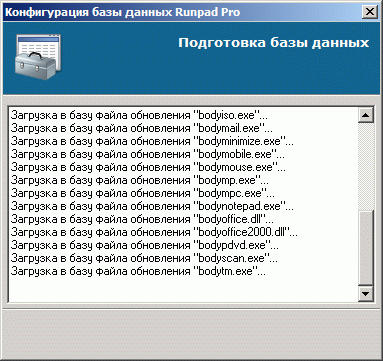

Обновление программы администратора, сервера и оператора необходимо производить вручную (т.е. установить новую версию поверх имеющейся), однако для обновления клиентских машин лучше воспользоваться автоматическим обновлением, потому как при большом количестве клиентских машин ручное обновление становится очень трудоемким.
Последовательность действий:
1. Загрузить с сайта Runpad Pro дистрибутив последней версии (или той, на которую хотите обновить).
2. Выполнить установку программы администратора поверх имеющейся версии.
При этом НЕЛЬЗЯ отменять запуск утилиты конфигурации базы данных, которая автоматически запускается в ходе установки.
Именно эта утилита заносит в базу файлы для последующего обновления клиентских машин:

3. Через программу оператора выполнить обновление всех клиентских машин по команде "Администрирование->Обновить клиентскую часть".
Посмотреть текущую версию клиентского ПО можно через "Информация->Общие сведения".
4. Обновить сервер вручную (поверх имеющейся версии).
5. Обновить программу оператора вручную (поверх имеющейся версии).